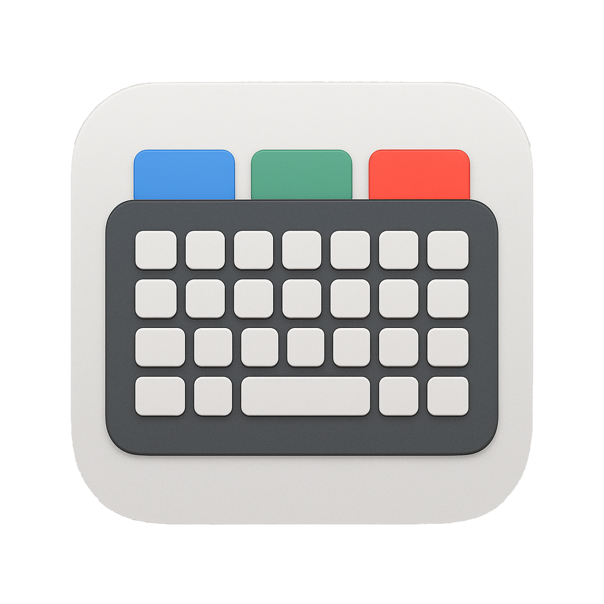

TyperMate
A smarter way to switch input methods and remap keys on macOS

Tired of fighting with macOS input methods and keyboard shortcuts?
TyperMate is the smarter, unified solution for seamless input switching, key remapping, and more—built for people who work in multiple languages or want a better typing experience on Mac.
Why People Need TyperMate
- Switching input methods on macOS is slow and requires too many clicks or keyboard shortcuts that are hard to remember.
- macOS sometimes forgets my preferred input method per app or window.
- On macOS, the Home and End keys go to the top/bottom of the document, not the start/end of the line like on Windows/Linux.
- I constantly have to use Cmd+Arrow instead, which is less convenient.
- There’s no easy way to remap these keys system-wide.
- I work in multiple languages and wish macOS could automatically switch input methods based on what I’m typing.
- Third-party tools for remapping or switching are often buggy, not maintained, or require complex configuration.
Sources: Reddit r/MacOS, Apple Support Communities, SuperUser
What Makes TyperMate Different?
- One-click hotkey setup for any input method
- Auto-detect input method using OCR or AI
- Remap Home/End keys to line start/end (like Windows/Linux)
- Remap Enter/F2 in Finder — press Enter to open and F2 to rename, matching Windows behavior
- Launch at login for instant productivity
- Internationalization (i18n) support
- Fast, lightweight, privacy-friendly
- No background network activity
- Open source and customizable
How TyperMate Solves Your Problems
🔥 Switch Input Methods with Hotkeys
Assign a hotkey to any input source. Instantly switch with a single keystroke—no more menu bar hunting or awkward shortcuts.
🔔 Popup Indicator
When you switch input methods TyperMate shows a small non-interactive popup to confirm the active input source — useful while typing or switching windows.
🎛️ Key Recorder & Settings
The Settings window lets you assign per-input hotkeys, record a new hotkey using a built-in key recorder, and toggle remapping and launch-at-login options.
🤖 Auto-Detect Input Method (OCR/AI)
Let TyperMate analyze your context and switch input methods for you. Perfect for multilingual users and fast-paced workflows.
⌨️ Remap Home/End Keys to Line Start/End
Make your Mac keyboard behave the way you expect. Remap Home/End to jump to the start/end of the line, just like on Windows/Linux.
Additionally, TyperMate can remap Enter and F2 while in Finder so Enter opens selected items and F2 renames them—useful if you switch often between macOS and Windows.
🚀 Launch at Login
Never forget to start your productivity tools. TyperMate can launch automatically every time you log in.
🌏 Internationalization (i18n) Support
Use TyperMate in your native language, or help translate for others.
Get Started in Minutes
- Download the latest release: TyperMate 0.0.1
- Drag
TyperMate.app to your Applications folder
- Open the app and grant necessary permissions
- Set up your hotkeys and preferences in Settings
Who Is TyperMate For?
- Multilingual professionals
- Developers and writers who want efficient navigation
- Anyone frustrated by macOS input method quirks
- Power users who want more control over their keyboard